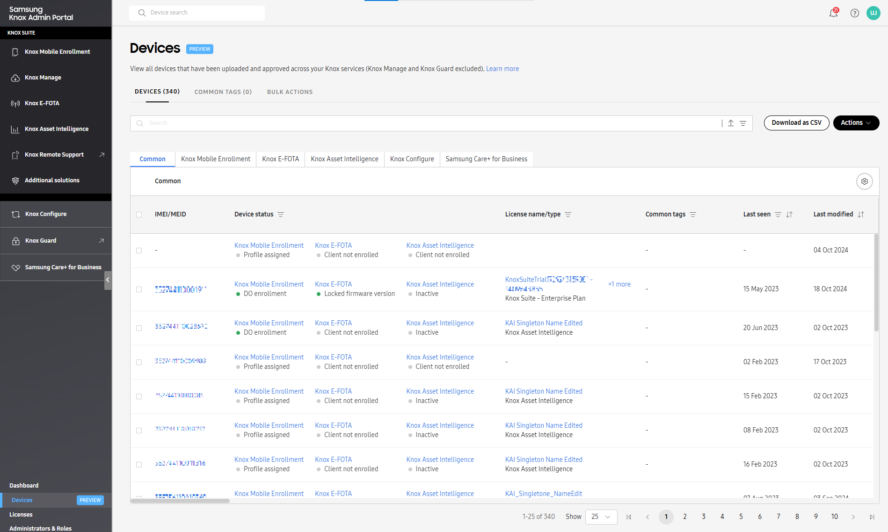
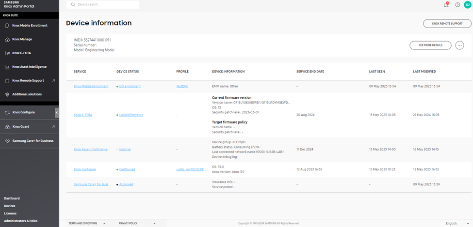

View and manage devices
Last updated November 20th, 2024
If your organization has devices enrolled in multiple Knox cloud services, the Knox Admin Portal offers two consolidated views that display cross-service information about devices:
- The common device list, which provides information about all the uploaded and approved devices across your Knox services.
- The device search page, which shows consolidated information about a single device.
If you’re a managed service provider admin, device and service information is limited to the customer you’re currently managing.
Common device list
To make it easier for you to keep track of devices across different Knox services, the common device list consolidates information about all your uploaded and approved devices.
Currently, device information for Knox Manage, Knox Guard, and Knox Remote Support isn’t included in the common device list.
To go to the common device list, click Devices in the bottom-left corner of the Knox Admin Portal navigation pane.

On this page, you’ll find:
- A DEVICES tab to check the status of your devices and jump to device lists in other services to manage them.
- A COMMON TAGS tab to create and assign tags to organize, sort, and search your devices.
- A BULK ACTIONS tab for easy upload of devices, with each device associated with up to 10 device tags.
DEVICES tab
The list shows common device information, such as the device IMEI/MEID, model name, and device status for each service. If a device has more than one IMEI, the primary IMEI is shown by default, with the secondary IMEI shown as a tooltip when you hover over the primary IMEI. In the tabs above the list, click a service name to jump to information about that service for the devices you’re currently seeing. To see all the service details in a sliding panel, click the device IMEI/MEID.
You can also sort the list by column and apply filters to one or more columns. To remove any filters that you applied, click Clear all filters.
By default, 25 devices are shown per page. You can also select whether you want to see 50 or 100 devices on each page instead.
To perform an action on certain devices, select them in the list. Above the list, you’ll then see links to the service consoles the devices are associated with. Select a service to go to a filtered view of that service’s device list, which only shows the devices you selected from the common device list.
Search for one or more devices in the list
Using the search bar, you can search for single or multiple devices in the common device list.
- Single device — Enter a device IMEI or serial number containing a minimum of 3 characters.
- Multiple devices — Enter a maximum of 100 exact device IMEIs and serial numbers, separated by commas. You can also click on the right side of the search bar to upload a CSV file containing up to 100 device IMEIs or serial numbers you want to find.
To add filters to your search, click  . In the Filters dialog, select the related service information you want to filter by, then click APPLY FILTERS. You can also clear any filters you applied previously by clicking CLEAR FILTERS, then APPLY FILTERS again.
. In the Filters dialog, select the related service information you want to filter by, then click APPLY FILTERS. You can also clear any filters you applied previously by clicking CLEAR FILTERS, then APPLY FILTERS again.
Configure the device list
To customize the columns in the common device list, click Settings. You can select which services you want to see in the list, as well as specific device information related to each service. If you can’t see or select a particular service, make sure you’re registered for it and that the service is shown on the portal.
Assign and remove common tags
You can assign up to 10 common tags to devices. The tags assigned to a device are also shown in the device details.
When you assign a common tag to a device, the information is shown in the device list and the device details. It is also shown in the common tag list.
To assign common tags, select one or more devices, click Actions > Assign common tags, enter the tag names, and click Save. You can select from an existing tag or add a new tag.
To remove assigned tags from devices, select the devices and click Actions > Remove common tags.
Export device information
To export common device information, click Download as CSV. You’re then able to choose whether you want to include all available columns in your export, or just specific columns that you select. By default, the columns shown in the device list are pre-selected.
COMMON TAGS tab
The list shows information about any tags that you create for the common device list in the Knox Admin Portal, such as the tag name, number of devices associated with it, and its last modified date. You can sort the list by column to lookup the common tags. To see all the tag details in a sliding panel, click the common tag name.
- The common tags are in addition to and separate from the device tags you might have created for each service.
- If you have the Manage tags permission for a Knox cloud service or the Manage devices permission for MSP, you can create, assign, and manage common tags.
Search by common tags
Using the search bar, you can search for all devices associated with a common tag. To search, enter at least three characters of a tag name. You can also include numbers and alphabets from local languages, such as Korean and Japanese. No special symbols are supported in the search.
Create common tags
To create one or more common tags, click Create tags, enter the tag names, and click Save. The tags show in the common tags list.
Rename a common tag
Renaming a common tag has no effect on the devices assigned to it.
To rename a common tag, click the tag name in the list, modify its name in the Edit common tag dialog that appears, and click Save. The tag name is updated in the common tags list.
Delete common tags
Deleting a common tag removes it from the common tags list and also removes it from any device that it’s assigned to.
To delete one or more common tags, select the tags, and click Actions > Delete tags. Alternatively, click the tag name in the list, click Delete in the Edit common tag dialog, and confirm to permanently delete the tag.
BULK ACTIONS tab
You can assign up to 10 common tags to multiple devices in a single bulk action. Use the provided CSV template to add, assign, and remove common tags in bulk.
To download the CSV template, click Assign common tags, and click Download CSV template on the page. You must provide device IMEIs and corresponding common tags in the template. If you specify a new tag, it’s added to the common tag list after upload.
To assign common tags, click Assign common tags, browse and select the CSV file, and click Submit. You can also overwrite or remove any common tags assigned to devices.
Device search
In the search bar at the top of the Knox Admin Portal, enter a device IMEI or serial number to view Knox service information for that device on a centralized page. If the device you’re searching for has two SIMs, you can enter either the primary or secondary IMEI to view its information.

You can also click SEE MORE DETAILS to go to a filtered view of the common device list, which only shows information about the device you searched for.
The device search page displays the following:
| Field | Description |
|---|---|
| SERVICE |
If the device is registered in a Knox cloud service and its user is invited to the service, the service name is shown. Click a service name to open the device's details on that service console and make updates to its info as required. Clicking a Knox Manage or Knox Remote Support link opens that service's console in a new web browser tab. |
| DEVICE STATUS | The last known enrollment status of the device, as reported by the service. Click a status to open a sliding panel containing additional device info. |
| PROFILE | The profile assigned to the device, if it exists. Click a profile name to see details about the profile. For Knox E-FOTA, info about the assigned campaign is shown instead. |
| DEVICE INFO | Service-specific info about the device. For example, if the service is Knox Manage, the device's associated user ID, organization, and/or group are shown. |
| SERVICE END DATE | The date when the service or license expires. |
| LAST SEEN | The date when the device last connected to the Knox cloud server. |
| LAST MODIFIED | The date when changes were last pushed to the device. |
Delete a device from all Knox cloud services
Admins with device management permissions for and access to all Knox cloud services can delete a device from all services with one action, instead of deleting it from each individual service.
Before you delete a device, make sure it can be safely deleted from all Knox cloud services first. If you only want to delete it from certain services, delete it from their respective consoles instead of the centralized device info page.
For example, if your device is enrolled in Knox E-FOTA and Knox Configure, and you want to keep it enrolled in Knox E-FOTA, delete the device from the Knox Configure console.
To delete a device from all services:
-
In the search bar at the top of the Knox Admin Portal, search for a device by its IMEI or serial number.
-
On the centralized device info page, click
 , then click Delete device. You won’t see this option if you don’t have the right permissions.
, then click Delete device. You won’t see this option if you don’t have the right permissions. -
If the device can be deleted from all the services it’s enrolled in, you’re prompted to confirm whether you want to continue with the device deletion. If so, click DELETE.
If a device uploaded from an EMM is deleted, and its EMM group is synced with Knox E-FOTA after deletion, the device will be added to Knox E-FOTA again.
If the device can’t be deleted from one or more services, the reason for each service is shown in the popup. To proceed with the deletion, try again after you address each reason.
If the deletion is successful, the device is deleted from all supported services in the Knox Admin Portal, including Knox Remote Support.
If the deletion is only partially successful, you’ll see a notification for each failed deletion with a downloadable CSV file containing more information.
On this page
Is this page helpful?